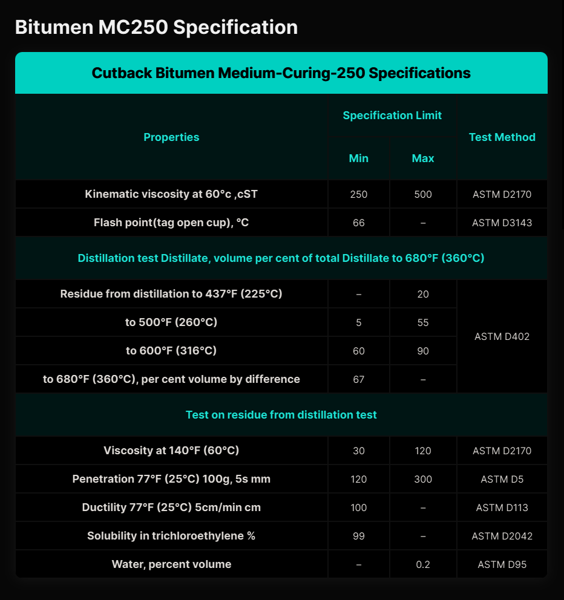

Cutback Bitumen MC‑250 – General Description │ Iran Bitumen Supply Int │ IBSI
Cutback Bitumen MC‑250 is a medium‑curing cutback asphalt produced by blending high‑quality penetration‑grade bitumen with a medium‑volatility petroleum solvent, typically kerosene. This solvent temporarily reduces the viscosity of the bitumen, allowing it to be applied easily at lower temperatures without the need for heating. Once applied, the solvent gradually evaporates, leaving behind a durable bitumen binder that performs the same function as conventional asphalt cement. With a viscosity range of 250–500 cSt, MC‑250 is engineered for applications where controlled curing time and deep penetration into granular surfaces are essential. The reduced viscosity allows the bitumen to flow into the pores of the base course, creating a strong bond between the underlying layer and the subsequent asphalt treatment. At Iran Bitumen Supply Int │ IBSI, our MC‑250 is produced from premium vacuum residue feedstock and blended with carefully selected petroleum solvents to ensure consistent curing behavior and compliance with ASTM D2028 specifications. The thermoplastic nature of the base bitumen ensures that it softens at high temperatures and hardens at lower temperatures, providing reliable performance across a range of climatic conditions.
Understanding How MC‑250 Works
Cutback bitumen is created by dissolving bitumen in volatile petroleum solvents. In the case of MC‑250, kerosene is the primary cutter. This temporary reduction in viscosity allows the bitumen to wet aggregates more effectively, making it ideal for prime coats and cold‑applied treatments. As the solvent evaporates over time, the bitumen returns to its original hardness and viscosity. If the solvent evaporates too slowly, the pavement may remain soft for longer than desired. However, when properly formulated, MC‑250 provides excellent penetration, adhesion, and long‑term durability.
Applications of Cutback Bitumen MC‑250
Cutback Bitumen MC‑250 is widely used in road construction, particularly as a prime coat on granular base courses. Its ability to penetrate deeply into the surface makes it ideal for preparing the base layer before applying hot mix asphalt. The reduced viscosity ensures that the bitumen fills capillary voids, binds loose particles, and creates a waterproof barrier that enhances the performance of the final pavement structure. MC‑250 is also used in cold‑applied asphalt mixes, patching materials, and stockpile mixes. In waterproofing applications, it is applied to seal surfaces, protect against moisture ingress, and bond mineral particles. It is commonly used in roofing as a waterproofing membrane and as an adhesive for applying protective chippings on flat roofs. In damp‑proofing, MC‑250 is used as a membrane in concrete floors and small structural repairs. Because it does not require heating, MC‑250 is especially valued in remote areas, small‑scale projects, and situations where heating equipment is not available.
Packing Options for Cutback Bitumen MC‑250
At Iran Bitumen Supply Int │ IBSI, MC‑250 is supplied in packaging formats designed for safe handling and efficient transport. It is available in bulk tankers for large‑scale projects and in new steel drums placed on pallets to prevent leakage during containerized shipping. These options ensure that the product arrives in optimal condition, ready for immediate use on site.

Specification of Bitumen MC‑250